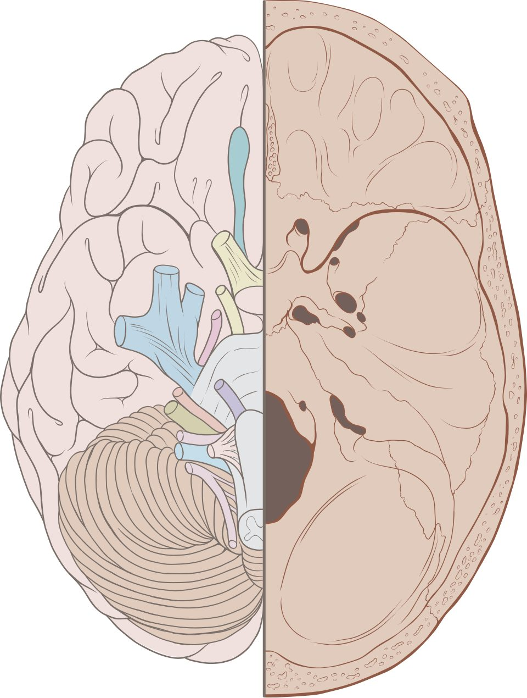

Twelve pairs that leave the skull
The cranial nerves are twelve pairs of nerves that leave the brain directly, most of them from the brainstem, and pass through openings in the skull. They control the senses of the head, the movements of the eyes and face, chewing, swallowing, speech and, through the vagus, much of the internal organs. They are numbered in Roman numerals from top to bottom, in the order in which they emerge. Galen had already described seven pairs, and the current classification into twelve was proposed by Samuel Sömmerring in 1778.
The twelve nerves
| No. | Name | Function | What is tested |
|---|---|---|---|
| I | Olfactory | Smell | Smelling substances with eyes closed |
| II | Optic | Vision | Visual acuity and field, fundoscopy |
| III | Oculomotor | Moves most of the eye muscles, lifts the eyelid, constricts the pupil | Eye movements, pupil, eyelid |
| IV | Trochlear | Moves the eye down and in | Looking down (going downstairs) |
| V | Trigeminal | Facial sensation; chewing | Touch on the face, corneal reflex, biting |
| VI | Abducens | Moves the eye outwards | Looking to the side |
| VII | Facial | Muscles of facial expression, taste on the front of the tongue, tears and saliva | Smiling, closing the eyes, wrinkling the forehead |
| VIII | Vestibulocochlear | Hearing and balance | Hearing, nystagmus, balance tests |
| IX | Glossopharyngeal | Taste at the back of the tongue, swallowing, sensation in the throat | Gag reflex |
| X | Vagus | Throat, larynx, heart, lungs, digestive system | Voice, lifting of the palate |
| XI | Accessory | Neck and shoulder muscles | Turning the head, shrugging the shoulders |
| XII | Hypoglossal | Tongue movements | Sticking out and moving the tongue |
A classic mnemonic: "Oh Oh Oh To Touch And Feel Very Good Velvet, Ah Heaven".
The vagus nerve
It is the longest cranial nerve ("vagus" means wandering): it runs from the medulla down to the abdomen. It carries the parasympathetic fibres that slow the heart and regulate digestion and breathing. It is the main component of the parasympathetic autonomic nervous system. Its sudden activation causes vasovagal syncope (fainting). Vagus nerve stimulation with an implanted device is used in drug-resistant epilepsy and depression.
Diseases of the cranial nerves
- Bell's palsy: of nerve VII. It affects the whole half of the face, including the forehead, unlike a stroke.
- Trigeminal neuralgia: pain like electric shocks in the face.
- Ophthalmic or ear shingles (Ramsay Hunt syndrome).
- Optic neuritis: of nerve II, common in multiple sclerosis.
- Palsy of nerve III, IV or VI: double vision. A third nerve palsy with a dilated pupil may be due to an aneurysm and is urgent; without pupil involvement it is often due to diabetes.
- Vestibular neuritis and acoustic neuroma: vertigo and hearing loss. See vertigo.
- Loss of smell: after viral infections (such as COVID-19), head injuries, and as an early symptom of Parkinson's and Alzheimer's.
- Involvement of the lower nerves (IX-XII): difficulty swallowing and speaking in ALS or myasthenia.
Sources
- Wilson-Pauwels L, et al. Cranial Nerves: Function and Dysfunction. 3rd ed. PMPH-USA; 2010.
- Campbell WW, Barohn RJ. DeJong's The Neurologic Examination. 8th ed. Wolters Kluwer; 2019.
- Blumenfeld H. Neuroanatomy through Clinical Cases. 3rd ed. Sinauer; 2021.